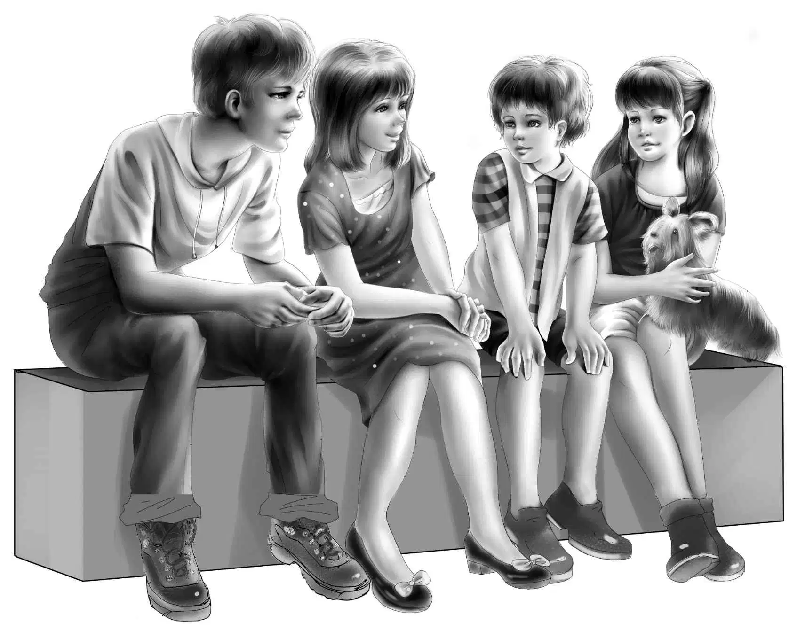
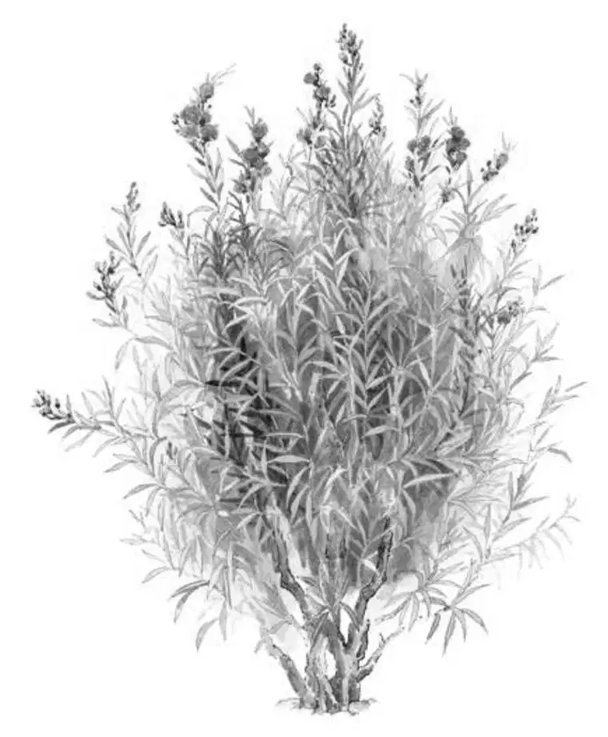
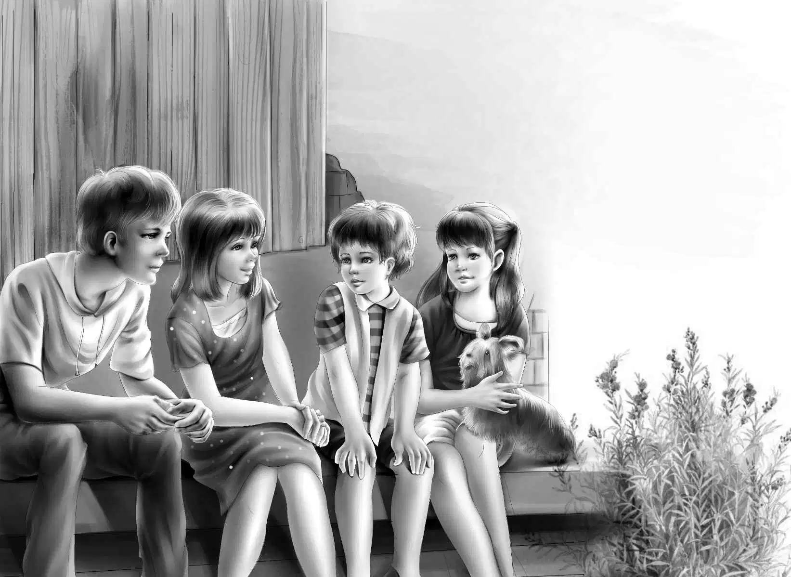
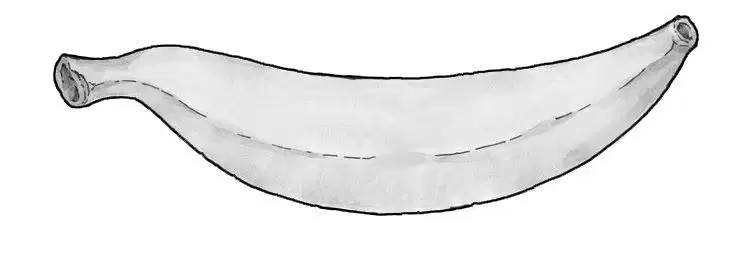
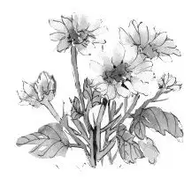
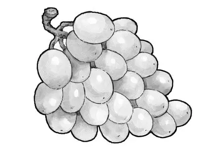

Sunshine and Shadow

“听！”维莉说道，“今早的雨比昨晚小得多，没准很快就会停了！”
“现在刚刚六点，时间还早。”亨利说，“但只要雨一停，咱们就得立刻出发。”
“来吧，早餐只好凑合一下了。”杰西说完，大家各自坐到了地上。
“新来的小狗怎么办？”班尼问道，“它也要吃东西啊。”
“咱们每个人分给它一点吧！”杰西说，“绝对够它吃了。”
想法总是好的，只是食物分作四份，本已少得可怜，再分出一份去，着实有些为难。尽管如此，当他们看到饿极的小狗狼吞虎咽时，心里觉得这么做还是值得的。
“慢点吃啦，小狗狗。”班尼叫道，“要细嚼慢咽才对。”
然而小狗丝毫没有细嚼慢咽的打算。风卷残云般消灭了自己那份牛奶和饼干后，它再次仰起小脑袋，眼巴巴地望着大家。
“看这架势，它至少一天没吃过东西了。”维莉说。
亨利将自己的东西收拾好，站起身来：“看，雨停了！咱们先找个地方，吃顿像样的早餐，然后再去问问谁家丢了小狗。”
“好主意。”杰西说，“这狗狗一直不大对劲，听它呜呜叫个不停，八成是有主人的。”
孩子们各自收好东西，把睡袋绑在了自行车的后架上。
“倒是可以省去告别的环节了。”班尼说，“而且门也锁不上。”
四个孩子推车走出了老房子，亨利尽可能地把门关好，大家沿着泥泞的小道朝马路上走去。
“小狗会跟上来的。”班尼说。
“绝对不能让它跟着咱们。”杰西的语气十分坚决，“家里已经有了望望，如果再来一只小狗，望望会不高兴的。况且，它家一定就在附近——看到没？它的爪子都没有磨破，要是远道跑来，怎会不磨破？”
杰西低头看了看小狗，小狗连忙摇起了尾巴。“回家去吧！”她说，“快点回去，真乖，回家去！”
但是小狗并没有乖乖回家，它只是怔怔地站在路旁，眼巴巴地望着孩子们，他们刚一骑上自行车，小狗就跟了过去。
“先不要理它。”班尼说，“或许它跟不了一会儿就回家了。咱们来场比赛吧，谁第一个找到商店，奖励一角钱。”
亨利一路领先，维莉落在最后，而小狗则一直追着维莉的车子奔跑。
“咱们必须先找地方吃饭，还要找家商店买些应急的口粮。”杰西说。
“没准吃饭的地儿就有商店呢？”维莉说，“那就再好不过啦！”

孩子们沿途看到了几座房子，却没有遇到任何行人，小狗则一路哼哼地跟着他们。
终于，他们看到了一栋貌似乡村商店的小屋。
“这是大家同时发现的。”杰西说，“所以谁都得不到奖励啦！”
这儿果然是一家商店，只是还没有开门营业，孩子们只好坐在台阶上等候着，小狗也蹲在一旁守着。
“也难怪，现在连七点都不到呢。”杰西说，“说不定要等到八点才开门。”
“要真是八点开门，我非得活活饿死不可。”班尼说。

不过出乎意料的是，商店并不是八点开门。七点钟的时候，一个男人沿着小路走来，在商店门口掏出了兜里的钥匙。
“嗨，孩子们！”那人招呼了一声，“想买点什么？”
小狗呜呜叫了两声，孩子们顿时跳了起来。
“要买的东西可多啦！”班尼说，“不过最要紧的，是先来点吃的。”
男人把钥匙插进锁孔，开了店门。
“你们随便挑吧！”店主说，“不过，我说的你们，可不包括这只小狗。”
“过来。”班尼一声呼唤，“蹲下！”小狗跑到班尼身旁，乖乖蹲了下来。
“哈，还真不含糊呢！”男人惊讶地叫道，“我家孩子要有这么听话就好了！”
“这么说，您不认识这只小狗？”亨利问道，“它也不是我们家的，是一路上跟过来的。”
“我从来没见过它。”店主答道。
“它家应该离这儿不远。”亨利说，“看！它的爪子都没磨破，一定是没走多远的路。”
“没准是谁开车扔在这儿的。”店主说，“有些人就是这样，净做这种缺德事。不过我可以肯定，它家绝对不在这附近。小家伙长得挺逗的，我还从没见过这个品种的狗呢。我可以帮着打听一下，但肯定不会有人认识它。”
“我们也没法收养它。”班尼说，“家里已经有只狗狗了。”
“要是见到新来的小狗跟自己争宠，望望准会不高兴的。”亨利说，“尤其当望望不听话时，却来了只出奇听话的小狗。”这番话惹得所有人都笑了起来。
杰西匆匆挑选了些应急的口粮，随即又选了些食物作为早餐。
好心的店主将孩子们的四个保温瓶洗得干干净净，灌满了牛奶。杰西买了些面包，另外又多买了两瓶牛奶，同时还买了黄油、麦片和香蕉。

“这根骨头不错，就送给你们的狗狗好了。”店主说。
“噢，谢谢您！”杰西说，“看来我们只好把狗狗带上了。可我总觉得，我们每走一步，它就离家更远了。”
“很抱歉。”店主摇了摇头，“我的店里也没法养狗，只有你们带上它了。”
无奈之下，大家只好骑上自行车，漂亮的小狗则紧跟在后面，一路哀哀地叫着。
班尼开口道：“既然都不知道小狗的名字，不如我来取一个吧，叫它小影儿怎样？因为它一直跟着咱们，像影子一样。”
“果然很形象，而且它的毛恰好也是烟影色的。”维莉补充道。
就这样，小狗便得了小影儿这个好名字。
“路边有好多地方适合野餐啊！”杰西回头叫道。
“只要附近没有奶牛就好。”维莉叫道。
班尼放眼眺望着四周的田野：“维莉，这儿除了雏菊以外，什么都没有，连头奶牛的影子都不见呢！”

奥登兄妹继续骑车前行，路上只碰到了一处必须下车推行的小山丘。随后，他们便找到了适合就餐的地方——只见那地方掩映在一片灌木和树林之中，从大路上不容易看到。更妙的是，还有一块平坦的大石，恰好可以当餐桌。
随即，自行车被放倒在草地上，一家人围着“石桌”坐了下来。
“这面包要是涂点黄油就好了。”班尼说。
“我还真买了些黄油。”杰西说，“不过只买了早餐的量，不然等太阳出来黄油就要融化了。”

太阳果然出来了，每个人的心情都好了起来。小影儿坐了下来，不用人吩咐，便规规矩矩地等候着。
杰西给它倒了些牛奶在纸盘里，又掰了些面包泡在里面。
“那根骨头你可以等到中午再吃。”杰西说道。
孩子们开始边喝牛奶边吃起了麦片和香蕉。“香蕉就不给小影儿吃了。”班尼笑着说道，“可是我们该拿它怎么办呢，亨利？”
“我也不知道。”亨利答道，“它的家应该就在附近，要是跟着咱们，反倒离家越来越远，这可帮了倒忙。”
尽管如此，孩子们上路的时候，小影儿仍然跟在新主人身后出发了。